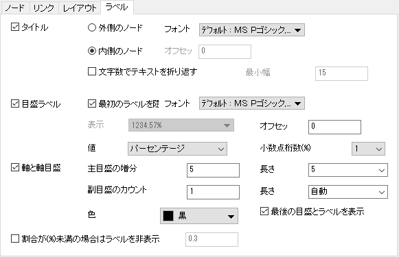

このタブを使用して、コードダイアグラムのすべての種類のラベルを制御できます。

すべてのノードのタイトルを表示する方法を指定します。。
オフセットの有無にかかわらず、ノードの外側または内側にタイトルを表示するように指定します。
タイトルテキストのフォントとフォーマットを指定します。
テキストが最小幅ボックスに入力された文字数よりも長い場合に、テキストを折り返すかどうかを指定します。
すべてのノードの最初のラベル（目盛りラベルの開始点、ほとんどが0）を非表示にするかどうかを指定します。
目盛ラベルのフォントと一般フォーマットを指定します。
目盛ラベルの数値フォーマット、接頭辞、接尾辞を指定します。
ノードからの、半径に沿った目盛りラベルのオフセットを指定します。このコントロールの単位はフォントの高さの％です。
目盛ラベルとして、重み、パーセンテージ（全ての重み）、または重みとパーセンテージの両方を表示するように指定します。
目盛ラベルにパーセントを表示するように選択した場合は、小数点以下の桁数を指定します。
このコントロールグループを使用して、目盛をカスタマイズできます。
主目盛の増分値を指定します。
主目盛の長さを「ポイント」の単位で指定します。
1つのメジャースケール内の副目盛のカウント数を指定します。
副目盛の長さを単位「ポイント」で指定します。
線と目盛の色を指定します。
最後の目盛とその目盛ラベルを表示するかどうかを指定します。このコントロールを使用して、最後の目盛とそのラベルを非表示にして、次のノードの最初の目盛との重複を回避できます。
割合（すべてのノードの合計重みにおける）が指定された値より小さい場合、ノードのすべてのラベル（タイトルと目盛ラベル）を非表示にします。